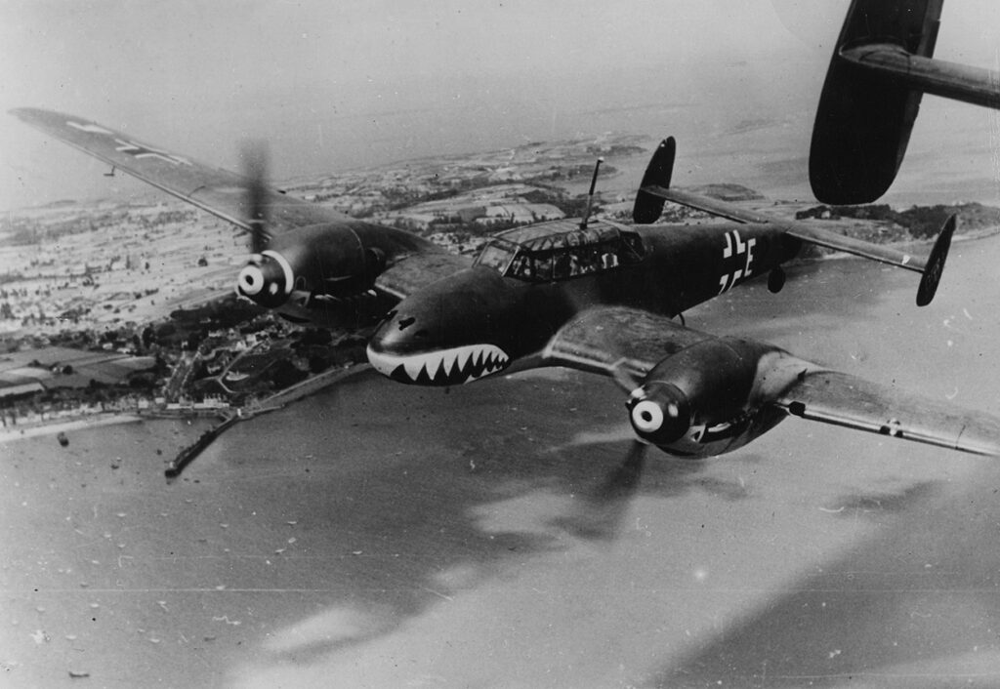

| Spesifikasi | Detail |
|---|---|
| Jenis | Pesawat Tempur Berat, Pembom Tempur, Pesawat Malam |
| Awak | 2 atau 3 orang (Pilot, Operator Radio/Penembak Belakang, terkadang Navigator) |
| Panjang | Sekitar 12,07 - 13,05 m (tergantung varian) |
| Lebar Sayap | 16,24 m |
| Tinggi | Sekitar 4,13 m |
| Berat Kosong | Sekitar 4.850 - 6.700 kg (tergantung varian) |
| Berat Lepas Landas Maksimum | Sekitar 6.750 - 9.500 kg (tergantung varian) |
| Mesin | Dua x Daimler-Benz DB 601 atau DB 605 V-12 terbalik (tergantung varian) |
| Tenaga Mesin | Sekitar 1.050 - 1.475 hp per mesin (tergantung varian) |
| Kecepatan Maksimum | Sekitar 480 - 590 km/jam (tergantung varian dan ketinggian) |
| Jarak Jelajah | Sekitar 800 - 2.450 km (tergantung varian) |
| Plafon Terbang | Sekitar 8.000 - 11.000 m (tergantung varian) |
| Persenjataan Depan | Bervariasi tergantung model, umumnya meliputi:
|
| Persenjataan Belakang | 1 atau 2 x 7,92 mm MG 15 atau MG 81Z senapan mesin fleksibel |
| Bom | Beberapa varian pembom tempur dapat membawa bom hingga 1.000 kg |
| Radar (Varian Malam) | Berbagai jenis radar seperti FuG 202 Lichtenstein BC atau FuG 220 Lichtenstein SN-2 |
| Produksi | Lebih dari 6.150 unit |